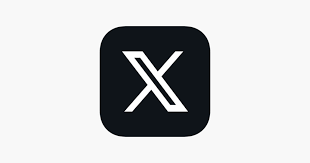
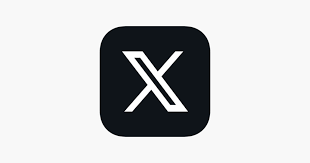

Facebook est un réseau social en ligne appartenant à Meta Platforms. Il permet à ses utilisateurs de publier des images, des photos, des vidéos, des fichiers et documents, d'échanger des messages, joindre et créer des groupes et d'utiliser une variété d'applications sur une variété d'appareils. Facebook est fondé en 2004 par Mark Zuckerberg et ses camarades de l'université Harvard : Chris Hughes, Eduardo Saverin, Andrew McCollum et Dustin Moskovitz. D'abord réservé aux étudiants de cette université, il s'est ensuite ouvert à d'autres universités américaines avant de devenir accessible à tous en septembre 2006. Le nom du site provient des albums photo (« trombinoscopes » ou « facebooks » en anglais) regroupant les photos des visages de tous les élèves prises en début d'année universitaire.
Instagram est un média social permettant de partager des photos et des vidéos, fondé et lancé sous forme d'application mobile et web en octobre 2010 par l'Américain Kevin Systrom et le Brésilien Michel Mike Krieger. Depuis 2012, l'application appartient au groupe américain Meta (anciennement Facebook Inc), elle est disponible sur les plates-formes mobiles de type iOS, Android et Windows Phone et également sur des ordinateurs avec des fonctionnalités réduites. L'âge minimum requis pour utiliser Instagram est de 13 ans6. Instagram revendique plus d'un milliard d'utilisateurs à travers le monde7, dont 75 % d'utilisateurs en dehors des États-Unis, selon les chiffres officiels fournis en juin 2018. L'appellation Instagram est un mot-valise bâti à partir de Insta de l'anglais Instant camera (appareil photographique instantané) et gram du mot anglais telegram
Twitter fondé le 21 mars 2006, et renommé X le 23 juillet 2023, est un réseau social de microblogage. Il permet à un utilisateur d’envoyer gratuitement des micro messages limités à 280 caractères, appelés tweets ou gazouillis2 par messagerie instantanée ou par SMS. Twitter est créé le 21 mars 2006 par Jack Dorsey, Evan Williams, Biz Stone et Noah Glass. Le service en ligne devient rapidement populaire. Le 5 mars 2017, il compte 313 millions d’utilisateurs actifs par mois, 500 millions de tweets envoyés par jour et est disponible en plus de quarante langues. En 2018, Twitter annonce pour la première fois avoir fait du profit. Le 27 octobre 2022, Elon Musk confirme le rachat des actions de Twitter et devient le nouveau propriétaire. Les mesures qu'il prend et les déclarations qu'il fait après son arrivée entraînent une forte réduction du nombre des salariés de la société.
| applications | nombre d'utilisateur |
|---|---|
| 2.5 milliard | |
| 3 milliard | |
| X | 550 millions |